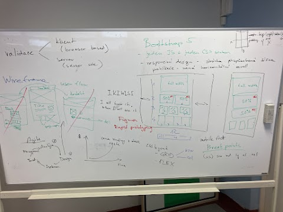

Valudace
- Klient
- browser based
- Server
- Server side
Wireframe
- Vždy webové stránky píšeme nejprve pro mobil
- je více uživatelů co používají mobil než počítač
- I will know it, if i see it.
- Zákazník nikdy neví co chce
- Uvědomí si to, až to uvidí
- Když se tak programátor dozí co chce je pozdě a stojí ho to čas
- Nejdříve zjistíme co zákazník chce -> pak uděláme nějaký wireframe, jak by to mohlo vypdat -> Až pak uděláme, testujeme a nasadíme na server
Uspořádání
- Nahoře vždy menu
- Pod tím Hlavní nadpis (h1) - použít pouze jednou
- Kapitoly
- Na spod kontakty a podobné věci
Bootstrap 5
- Musíme přidat jak JS tak CSS knihovnu
- Slouží k responzivním stránkám (např přizpůsobení šířce = breakpointy)
- CSS layaut
- Grid
- Má sloupc a řádky
- Row
- Col
- Má sloupc a řádky
- Flex s
- Grid
- 12 linií
- Slouží k zarovnávání, aby stránka vypadala všude dobře
- 12 kvůli tomu, že je dělitelné jak 2 tak 3
Breakpointy
- Používáme je na designování w. a. na různých zařízení
- Mobile first
- Pro mobil je optimálí sm a níž
- Pro pc, tablety apod md a výš